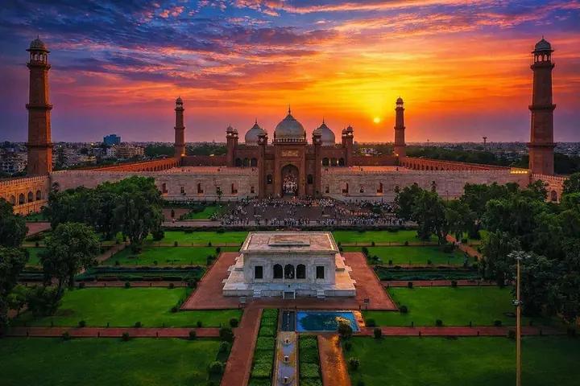

Private tour · Lahore
Wagah Border Ceremony Tour from Lahore
Every evening at the Wagah–Attari border, Pakistani and Indian soldiers lower their flags in a loud, proud and unforgettable ceremony. We take you there with a guide who explains it all.
- Late afternoon to sunset
- About 1 hour from central Lahore
- Bring your passport
- English & Urdu guides
What happens at the Wagah Border ceremony
The Wagah–Attari crossing on the Grand Trunk Road is the only road border between Pakistan and India. Each day before sunset, the Pakistan Rangers and India’s Border Security Force perform the flag-lowering ceremony: high kicks, fast marching, a dramatic handshake and the closing of the gates, while crowds on both sides cheer, sing and wave flags.
It is part military parade, part festival, and one of the most memorable evenings you can have in Pakistan.
How to visit with us
- Lahore full-day tour: the easiest way. You see Lahore Fort, the Badshahi Mosque and the Walled City during the day, then our driver takes you to Wagah for the ceremony. See the full-day tour.
- Wagah only: short on time? Message us on WhatsApp and we will quote a private car and guide from your hotel to the ceremony and back.
Tips for the ceremony
- The ceremony starts shortly before sunset, so the time changes through the year. We plan the day around it and confirm the timing for your date.
- Arrive early. Seats fill up, especially on weekends and public holidays, and there are security checks on the way in.
- Foreign visitors usually have their own seating area. Carry your original passport.
- Travel light: large bags are not allowed in, so leave them in the car or at your hotel.
- Dress comfortably and bring water. It can be hot in summer and chilly after sunset in winter.
Questions travellers ask
How far is the Wagah Border from Lahore?
The border is about 30 km east of central Lahore, roughly an hour by car depending on traffic.
What time does the Wagah Border ceremony start?
It is held every evening shortly before sunset, so the start time changes with the seasons. We confirm the time for your date and plan the drive so you arrive early enough to get a seat.
Do foreigners need a passport at Wagah?
Yes. Foreign visitors should carry their original passport for the security checks and the visitors' seating area.
How much is the Wagah Border tour?
The ceremony is included in our Lahore full-day tour, from US$135 per person for a solo traveller with a private car, guide, entry tickets and hotel pickup. Groups pay less per person. For a Wagah-only trip, ask us on WhatsApp for a quote.
Can I combine Wagah with Lahore sightseeing?
Yes. Our full-day tour covers Lahore Fort, the Badshahi Mosque and the Walled City before the ceremony, so you see the city and the border in one day.